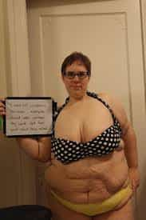
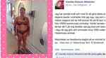

< < < Back
Swedish Bath Houses Ban “Fat Shaming” Scales – Return Of Kings
For many years what’s called “träningshets” have been a subject of debate in Sweden. It literally translates to something like “exercise incitement,” meaning that some people feel pushed by societal norms to exercise a lot and get fit bodies. This is a bad thing, in their mind.
Now the issue of fat shaming has reached this little Nordic country. Fighting obesity in the age of the SJW means you hate fat people. To make sure no one’s feelings get hurt, bath facilities are throwing out their weighing scales.
Lawless fatness
Thina Grotmark, fat and proud.
“Fettskam” (fat shame), “fettförakt” (fat contempt) and “fettfobi” (fat phobia) are three new terms that can be added to the Swedish dictionary. People not only want acceptance for not working out and not having well-trimmed bodies, they want obesity to be accepted too.
This has been expressed in a number of articles lately. Let’s read what three women (since men rarely complain about this) have to say about it.
Thina Grotmark calls fat shaming a “civil rights issue.” She is the editor of Fett Magazine, a web site that promotes fat acceptance. To give you an idea of what the site is about, it’s enough to quote its comment policy.
This is a fat safe zone – We will not allow any fat phobic/racist/homophobic and or misogynistic content! Further more – Be kind to each other, any offensive or mean comments will be deleted. We also want to deter you from writing anything about diets, weight loss and or ‘helpful’ tips about health. We are not interested!
Thina Grotmark says she is the victim of oppression and discrimination for being fat. According to her, fat people can’t find jobs, and are refused medical treatment. This is all proven by one reference—to another feminist web site.
The problem is that we have to approach the fat haters without fighting back since you can be our potential bosses, doctors, colleagues or even members of our family and since we according to the law don’t have any rights.
Tired of “fat contempt”

Another woman who says that everybody has to accept her obesity is My, 21 years old. She used to hate being overweight, but that changed when she discovered the fat acceptance movement. Now she refuses to feel ashamed.
It should be a fact that I’m fat, just like you are thin, and just like I have brown hair.
The reporter asks her about the correlation between obesity and health issues.
It’s a complicated issue. Lifestyle has to do with more than weight. If you’re living on candy you’re unhealthy no matter how much you weigh, but honestly it is also a personal choice.
Ellinor Löfgren is not fat, but has had enough of society’s “fat contempt”.
I don’t want to hear it anymore. I don’t want to hear about your quickest ways to lose weight. I don’t want to hear about ‘healthier options’ to all of my meals and I don’t want to hear about how you will ride your bicycle home from work instead of taking the buss.
Healthiness is no longer just a trend, she says, but a norm that she feels forced to comply to. Eating food you don’t actually like only because it’s healthy, and being afraid to gain weight, is unsound.
Isn’t it healthier to be a free human being, unfettered by body fixation?
Fat shaming scales
Bath houses in Stockholm are now removing the weighing scales from their locker rooms. This as a result of public outrage that began with a Facebook post by a woman who didn’t want children to compare and comment on their weights.
The outrage in social media has caused many municipalities to consider making their bath facilities scale free. One director of a bath house in the town of Huddinge says that people had complained about the scales before, but that the Facebook post was the last straw.
We want our guests to focus on how they are feeling, not on how much they weigh.
The director says that reactions have been mostly positive, but some have been more critical.
I’ve gotten ironic comments saying that we should remove all mirrors while we’re at it.

The “brave” Facebook post.
Choices have consequences
Sweden has long been a country of slender, beautiful people. But that is about to change as radical feminists like Thina Grotmark brands everyone who doesn’t adore her big body “fat phobic” and misogynistic.
The claim that obese people “don’t have any rights” is an obviously false statement. But you can have good reasons to choose a slim person over a fat one for a job position. Being fat is a sign that you’re probably lazy and careless, someone who can’t even be relied on to care for your own body. Furthermore, some jobs require a person to be in good shape and able to handle physical stress.
21-year-old My thinks that being fat should be no different than having brown hair, i.e., something you were born with. Just moments later, though, she admits that being fat is “also a personal choice.”
When you discriminate against people for their weight, you’re judging them based on their life choices, not on how they were born. Losing and gaining weight is optional.
Infuriating idiocy
Hearing the lamentations of these fatties is enough to make an otherwise calm and collected person pissed off. Like all SJW’s, these people are clearly not looking for equality, and they would never make an effort to improve themselves. Instead, they want everything to be handed to them for free—entitlements only granted to them, the oppressed ones.
They want jobs they don’t deserve, money they haven’t earned, health care they haven’t paid for, and compliments and love while being fat, ugly and stupid. All of this for doing nothing more than merely existing.
While calling men that criticize them and try to give them helpful advice “hateful,” they have no trouble causing outrage about harmless things like weighing scales. This time they won, and scales are being banished all throughout the country.
But will they stop at that, now that they know that things which upset them will be made forbidden? Fat chance.
Read More: How Female-Dominated Publishing Houses Are Censoring Male Authors


{kind=link}